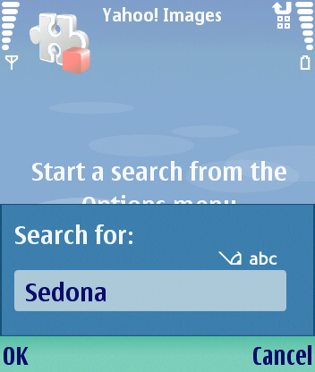
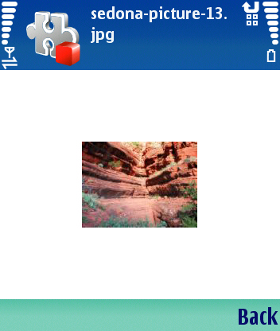

This example shows how to use the Carbide.c++ UI Designer for S60 to define the UI of an application and to implement the "real work" in the generated code.
The application consists of two screens. The main screen prompts the user to to initiate a search and displays the list of search results. The second screen displays the Yahoo! provided thumbnail image of the selected result.
Choose a link to read the following topics:
When the application initially opens there are not yet any search results to display. The application displays information about how to begin a search (Figure 1).
Figure 1 - Starting the search
A query dialog is used to prompt for the search string (Figure 2).

Figure 2 - Entering search string
Search results are displayed in a list box (Figure 3).
Figure 3 - Starting the search
Clicking on the selected item displays the thumbnail image (Figure 4).
Figure 4 - Program displays image